INTERMEZZO 3: SCOPE AND ABSTRACTION
While the preceding part gets away with explaining local and lambda in an informal manner, the introduction of such abstraction mechanisms really requires additional terminology to facilitate such discussions. In particular, these discussions need words to delineate regions within programs and to refer to specific uses of variables.
This intermezzo starts with a section that defines the new terminology: scope, binding variables, and bound variables. It immediately uses this new capability to introduce two abstraction mechanisms often found in programming languages: for loops and pattern matching. The former is an alternative to functions such as map, build-list, andmap, and the like; the latter abstracts over the conditional in the functions of the first three parts of the book. Both require not only the definition of functions but also the creation of entirely new language constructs, meaning they are not something programmers can usually design and add to their vocabulary.
Scope
Consider the following two definitions:
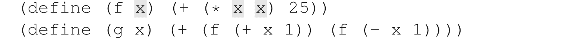
Clearly, the occurrences of x in f are completely unrelated to the occurrences of x in the definition of g. We could systematically replace the shaded occurrences with y and the function would still compute the exact same result. In short, the shaded occurrences of x have meaning only inside the definition of f and nowhere else.
At the same time, the first occurrence of x in f is different from the others. When we evaluate (f n), the occurrence of f completely disappears while those of x are replaced with n. To distinguish these two kinds of variable occurrences, we call the x in the function header a binding occurrence and those in the function’s body the bound occurrences. We also say that the binding occurrence of x binds all occurrences of x in the body of f. Indeed, people who study programming languages even have a name for the region where a binding occurrence works, namely, its lexical scope.
The definitions of f and g bind two more names: f and g. Their scope is called top-level scope because we think of scopes as nested (see below).
The term free occurrence applies to a variable without any binding occurrence. It is a name without definition, that is, neither the language nor its libraries nor the program associates it with some value. For example, if you were to put the above program into a definitions area by itself and run it, entering f, g, and x at the prompt of the interactions would show that the first two are defined and the last one is not:
> f
f
> g
g
> x
x:this variable is not defined
The description of lexical scope suggests a pictorial representation of f’s definition:
DrRacket’s “Check Syntax” functionality draws diagrams like these.
Here is an arrow diagram for top-level scope:
Note that the scope of f includes all definitions above and below its definition. The bullet over the first occurrence indicates that it is a binding occurrence. The arrows from the binding occurrence to the bound occurrences suggest the flow of values. When the value of a binding occurrence becomes known, the bound occurrences receive their values from there.
Along similar lines, these diagrams also explain how renaming works. If you wish to rename a function parameter, you search for all bound occurrences in scope and replace them. For example, renaming f’s x to y in the program above means that
(define (f x) (+ (* x x) 25))
(define (g x) (+ (f (+ x 1)) (f (- x 1))))
changes only two occurrences of x:
(define (f y) (+ (* y y) 25))
(define (g x) (+ (f (+ x 1)) (f (- x 1))))
Exercise 300. Here is a simple ISL+ program:
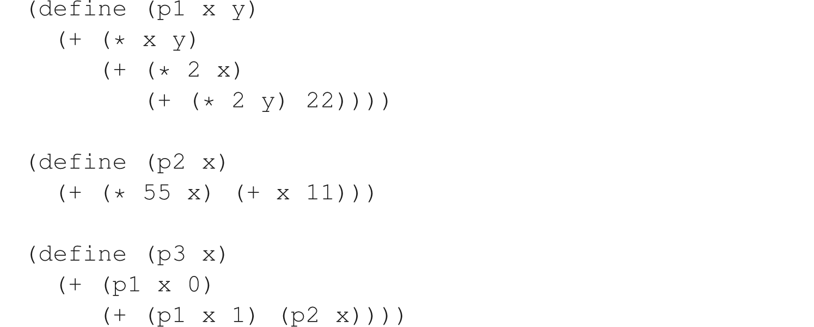
Draw arrows from p1’s x parameter to all its bound occurrences. Draw arrows from p1 to all bound occurrences of p1. Check the results with DrRacket’s CHECK SYNTAX functionality. 
In contrast to top-level function definitions, the scope of the definitions in a local is limited. Specifically, the scope of local definitions is the local expression. Consider the definition of an auxiliary function f in a local expression. It binds all occurrences within the local expression but none that occurs outside:
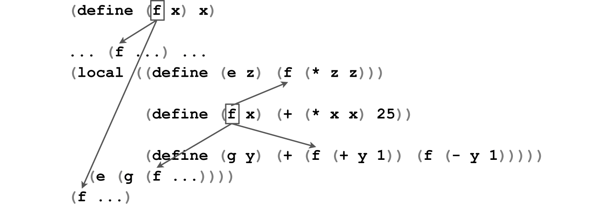
The two occurrences outside of local are not bound by the local definition of f. As always, the parameters of a function definition, local or not, are only bound in the function’s body.
Since the scope of a function name or a function parameter is a textual region, people also draw box diagrams to indicate scope. More precisely, for parameters a box is drawn around the body of a function:
In the case of local, the box is drawn around the entire expression:
In this example, the box describes the scope of the definitions of f and g.
Drawing a box around a scope, we can also easily understand what it means to reuse the name of a function inside a local expression:
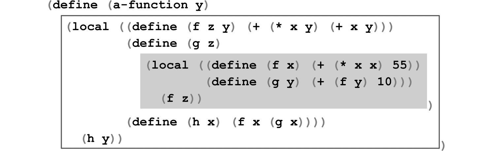
The gray box describes the scope of the inner definition of f; the white box is the scope of the outer definition of f. Accordingly, all occurrences of f in the gray box refer to the inner local; all those in the white box, minus the gray one, refer to the definition in the outer local. In other words, the gray box is a hole in the scope of the outer definition of f.
Holes can also occur in the scope of a parameter definition:
In this function, the parameter x is used twice: for f and g; the scope of the latter is thus a hole in the scope of the former.
In general, if the same name occurs more than once in a function, the boxes that describe the corresponding scopes never overlap. In some cases the boxes are nested within each other, which gives rise to holes. Still, the picture is always that of a hierarchy of smaller and smaller nested boxes.
Exercise 301. Draw a box around the scope of each binding occurrence of sort and alon in figure 105. Then draw arrows from each occurrence of sort to the appropriate binding occurrence. Now repeat the exercise for the variant in figure 106. Do the two functions differ other than in name?
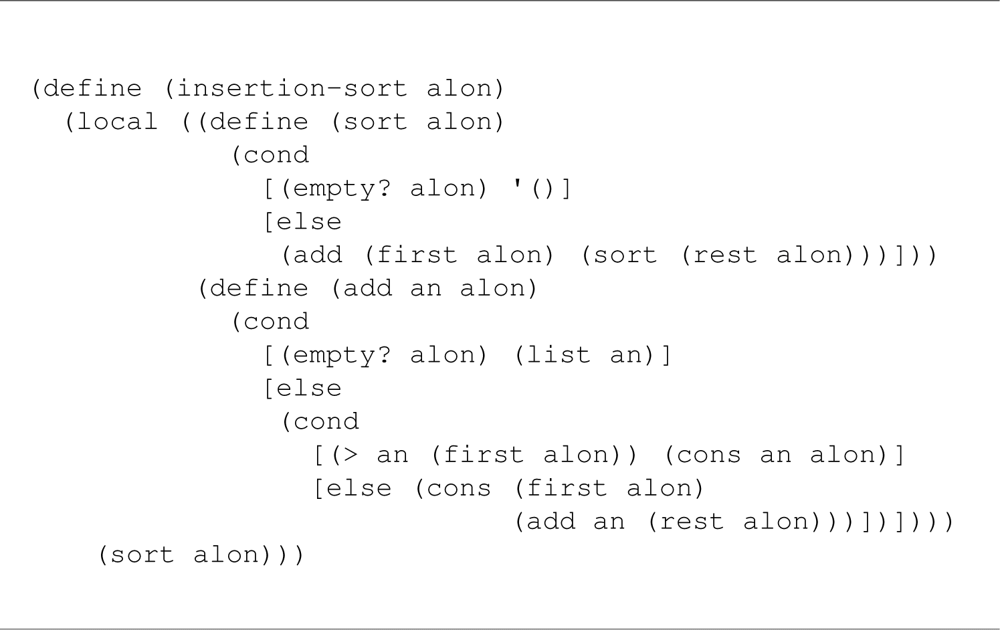
Figure 105: Drawing lexical scope contours for exercise 301
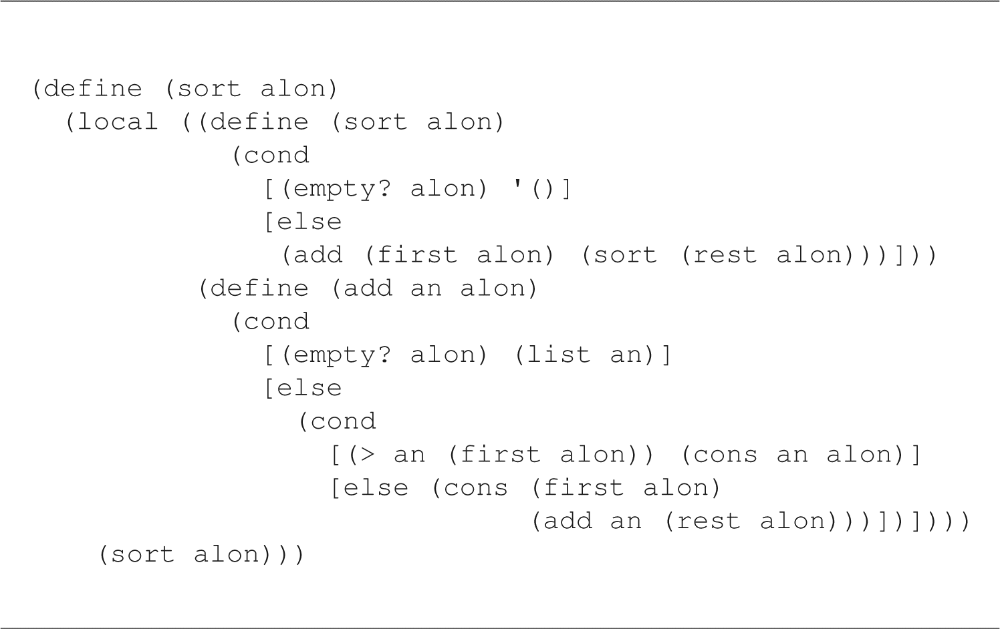
Figure 106: Drawing lexical scope contours for exercise 301 (version 2)
Exercise 302. Recall that each occurrence of a variable receives its value from its binding occurrence. Consider the following definition:
(define x (cons 1 x))
Where is the shaded occurrence of x bound? Since the definition is a constant definition and not a function definition, we need to evaluate the right-hand side immediately. What should be the value of the right-hand side according to our rules?
As discussed in chapter 17.1, a lambda expression is just a short-hand for a local expression. That is, if a-new-name does not occur in exp,
(lambda (x-1 … x-n) exp)
is short for
(local ((define (a-new-name x-1 … x-n) exp))
a-new-name)
The short-hand explanation suggests that
(lambda (x-1 … x-n) exp)
introduces x-1, ⋯, x-n as binding occurrences and that the scope of parameters is exp, for example:
O course, if exp contains further binding constructs (say, a nested local expression), then the scope of the variables may have a hole.
Exercise 303. Draw arrows from the shaded occurrences of x to their binding occurrences in each of the following three lambda expressions:
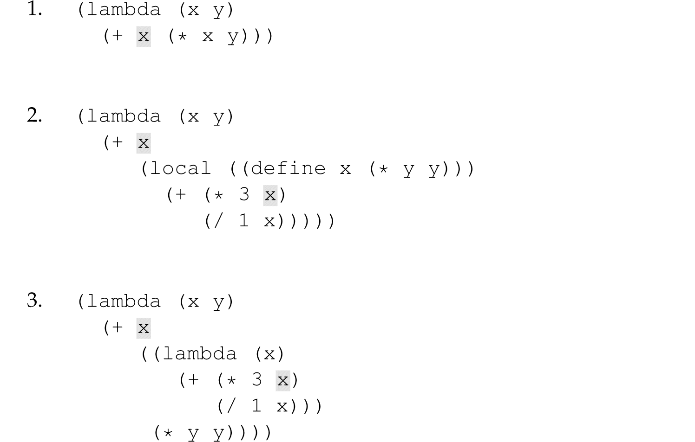
Also draw a box for the scope of each shaded x and holes in the scope as necessary.
ISL for Loops
Even though it never mentions the word, part III introduces loops. Abstractly, a loop traverses compound data, processing one piece at a time. In the process, loops also synthesize data. For example, map traverses a list, applies a function to each item, and collects the results in a list. Similarly, build-list enumerates the sequence of predecessors of a natural number (from 0 to (- n 1)), maps each of these to some value, and also gathers the results in a list.
Use the 2htdp/abstraction library. Instructors who use it for the remainder of the book should explain how the principles of design apply to languages without for and match.
The loops of ISL+ differ from those in conventional languages in two ways. First, a conventional loop does not directly create new data; in contrast, abstractions such as map and build-list are all about computing new data from traversals. Second, conventional languages often provide only a fixed number of loops; an ISL+ programmer defines new loops as needed. Put differently, conventional languages view loops as syntactic constructs akin to local or cond, and their introduction requires a detailed explanation of their vocabulary, grammar, scope, and meaning.
Loops as syntactic constructs have two advantages over the functional loops of the preceding part. On the one hand, their shape tends to signal intentions more directly than a composition of functions. On the other hand, language implementations typically translate syntactic loops into faster commands for computers than functional loops. It is therefore common that even functional programming languages—with all their emphasis on functions and function compositions—provide syntactic loops.
In this section, we introduce ISL+’s so-called for loops. The goal is to illustrate how to think about conventional loops as linguistic constructs and to indicate how programs built with abstractions may use loops instead. Figure 107 spells out the grammar of our selected for loops as an extension of BSL’s grammar from intermezzo 1. Every loop is an expression and, like all compound constructs, is marked with a keyword. The latter is followed by a parenthesized sequence of so-called comprehension clauses and a single expression. The clauses introduce so-called loop variables, and the expression at the end is the loop body.
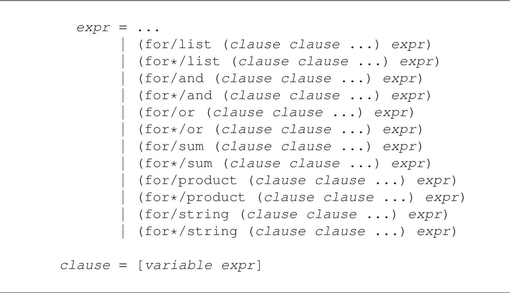
Figure 107: ISL+ extended with for loops
Even a cursory look at the grammar shows that the dozen looping constructs come in six pairs: a for and for* variant for each of list, and, or, sum, product, and string. All for loops bind the variables of their clauses in the body; the for* variants also bind variables in the subsequent clauses. The following two near-identical code snippets illustrate the difference between these two scoping rules:
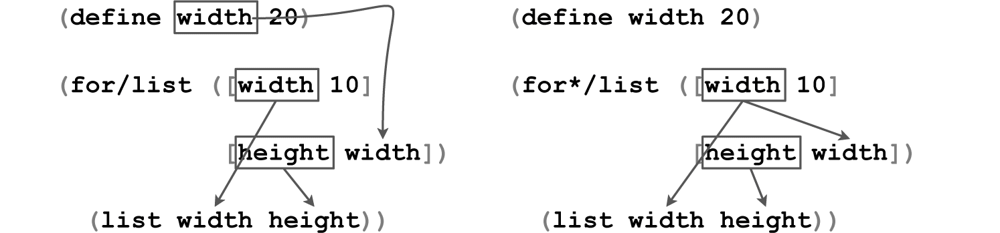
Racket’s version of these loops comes with more functionality than those presented here, and the language has many more loops than this.
The syntactic difference is that the left one uses for/list and the right one for*/list. In terms of scope, the two strongly differ as the arrows indicate. While both pieces introduce the loop variables width and height, the left one uses an externally defined variable for height’s initial value and the right one uses the first loop variable.
Semantically, a for/list expression evaluates the expressions in its clauses to generate sequences of values. If a clause expression evaluates to
• a list, its items make up the sequence values;
• a natural number n, the sequence consists of 0, 1, ⋯, (- n 1); and
• a string, its one-character strings are the sequence items.
Next, for/list evaluates the loop body with the loop variables successively bound to the values of the generated sequence(s). Finally, it collects the values of its body into a list. The evaluation of a for/list expression stops when the shortest sequence is exhausted.
Terminology Each evaluation of a loop body is called an iteration. Similarly, a loop is said to iterate over the values of its loop variables.
Based on this explanation, we can easily generate the list from 0 to 9:
> (for/list ([i 10])
i)
(list 0 1 2 3 4 5 6 7 8 9)
This is the equivalent of a build-list loop:
> (build-list 10 (lambda (i) i))
(list 0 1 2 3 4 5 6 7 8 9)
The second example “zips” together two sequences:
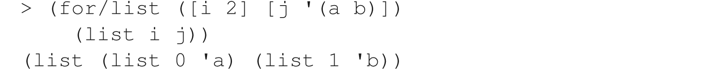
For comparison again, here is the same expression using plain ISL+:
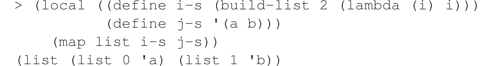
The final example emphasizes designing with for/list:
Sample Problem Design enumerate. The function consumes a list and produces a list of the same items paired with their relative index.
Stop! Design this function systematically, using ISL+’s abstractions.
With for/list, this problem has a straightforward solution:
; [List-of X] -> [List-of [List N X]]
; pairs each item in lx with its index
(check-expect
(enumerate '(a b c)) '((1 a) (2 b) (3 c)))
(define (enumerate lx)
(for/list ([x lx] [ith (length lx)])
(list (+ ith 1) x)))
The function’s body uses for/list to iterate over the given list and a list of numbers from 0 to (length lx) (minus 1); the loop body combines the index (plus 1) with the list item.
In semantic terms, for*/list iterates over the sequences in a nested fashion while for/list traverses them in parallel. That is, a for*/list expression basically unfolds into a nest of loops:
(for*/list ([i 2] [j '(a b)])
…)
is short for
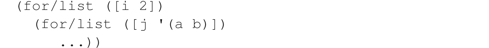
In addition, for*/list collects the nested lists into a single list by concatenating them with foldl and append.
Exercise 304. Evaluate
(for/list ([i 2] [j '(a b)]) (list i j))
and
(for*/list ([i 2] [j '(a b)]) (list i j))
in the interactions area of DrRacket.
Let’s continue the exploration by turning the difference in scoping between for/list and for*/list into a semantic difference:
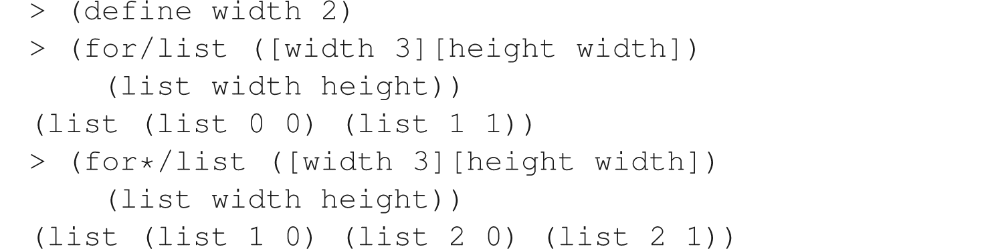
To understand the first interaction, remember that for/list traverses the two sequences in parallel and stops when the shorter one is exhausted. Here, the two sequences are
The first two rows show the values of the two loop variables, which change in tandem. The last row shows the result of each iteration, which explains the first result and the absence of a pair containing 2.
Now contrast this situation with for*/list:
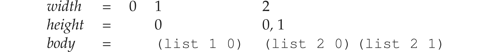
While the first row is like the one for for/list, the second one now displays sequences of numbers in its cells. The implicit nesting of for*/list means that each iteration recomputes height for a specific value of width and thus creates a distinct sequence of height values. This explains why the first cell of height values is empty; after all, there are no natural numbers between 0 (inclusive) and 0 (exclusive). Finally, each nested for loop yields a sequences of pairs, which are collected into a single list of pairs.
Here is a problem that illustrates this use of for*/list in context:
Sample Problem Design cross. The function consumes two lists, l1 and l2, and produces pairs of all items from these lists.
Stop! Take a moment to design the function, using existing abstractions.
As you design cross, you work through a table such as:
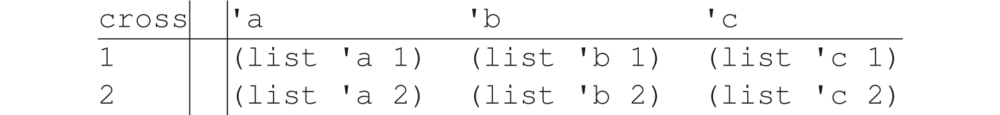
The first row displays l1 as given, while the left-most column shows l2. Each cell in the table corresponds to one of the pairs to be generated.
Since the purpose of for*/list is an enumeration of all such pairs, defining cross via for*/list is straightforward:
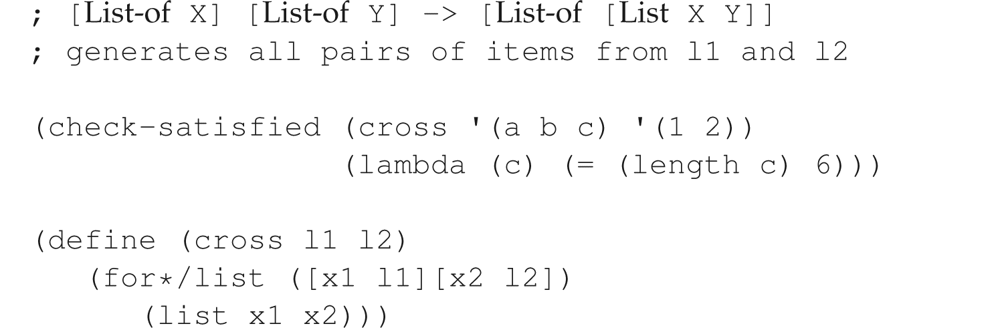
We use check-satisfied instead of check-expect because we do not wish to predict the exact order in which for*/list generates the pairs.
Note Figure 108 shows another in-context use of for*/list. It displays a compact solution of the extended design problem of creating all possible rearrangements of the letters in a given list.
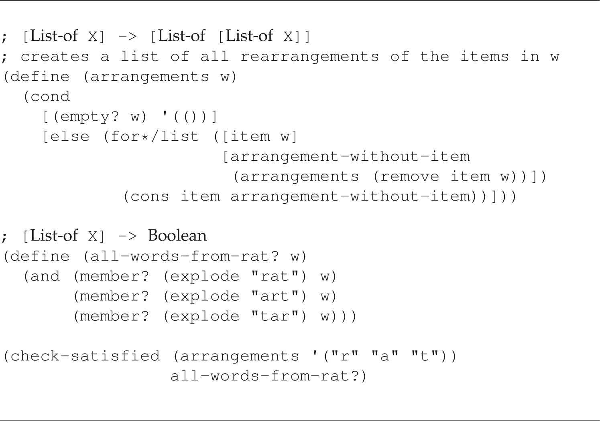
Figure 108: A compact definition of arrangements with for*/list
While chapter 12.4 sketches the proper design of this complex program, figure 108 uses the combined power of for*/list and an unusual form of recursion to define the same program as a single, five-line function definition. The figure merely exhibits the power of these abstractions; for the underlying design, see especially exercise 477. End
We thank Mark Engelberg for suggesting this exhibition of expressive power.
The …/list suffix clearly signals that the loop expression creates a list. In addition, the library comes with for and for*x loops that have equally suggestive suffixes:
• …/and collects the values of all iterations with and:
> (for/and ([i 10]) (> (- 9 i) 0))
#false
> (for/and ([i 10]) (if (>= i 0) i #false))
9
For pragmatics, the loop returns the last generated value or #false.
• …/or is like …/and but uses or instead of and:
> (for/or ([i 10]) (if (= (- 9 i) 0) i #false))
9
> (for/or ([i 10]) (if (< i 0) i #false))
#false
These loops return the first value that is not #false.
• …/sum adds up the numbers that the iterations generate:
> (for/sum ([c "abc"]) (string->int c))
294
• …/product multiplies the numbers that the iterations generate
> (for/product ([c "abc"]) (+ (string->int c) 1))
970200
• …/string creates Strings from the 1String sequence:
> (define a (string->int "a"))
> (for/string ([j 10]) (int->string (+ a j)))
"abcdefghij"
Stop! Imagine how a for/fold loop would work.
Stop again! It is an instructive exercise to reformulate all of the above examples using the existing abstractions in ISL+. Doing so also indicates how to design functions with for loops instead of abstract functions. Hint Design and-map and or-map, which work like andmap and ormap, respectively, but which return the appropriate non-#false values.
Looping over numbers isn’t always a matter of enumerating 0 through (- n 1). Often programs need to step through nonsequential sequences of numbers; other times, an unlimited supply of numbers is needed. To accommodate this form of programming, Racket comes with functions that generate sequences, and figure 109 lists two that are provided in the abstraction library for ISL+.
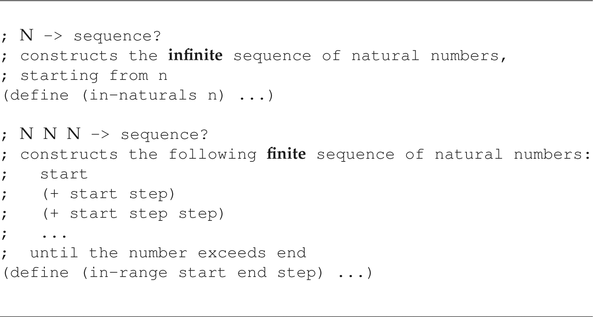
Figure 109: Constructing sequences of natural numbers
With the first one, we can simplify the enumerate function a bit:
(define (enumerate.v2 lx)
(for/list ([item lx] [ith (in-naturals 1)])
(list ith item)))
Here in-naturals is used to generate the infinite sequence of natural numbers starting at 1; the for loop stops when l is exhausted.
With the second one, it is, for example, possible to step through the even numbers among the first n:
; N -> Number
; adds the even numbers between 0 and n (exclusive)
(check-expect (sum-evens 2) 0)
(check-expect (sum-evens 4) 2)
(define (sum-evens n)
(for/sum ([i (in-range 0 n 2)]) i))
Although this use may appear trivial, many problems originating in mathematics call for just such loops, which is precisely why concepts such as in-range are found in many programming languages.
Exercise 305. Use loops to define convert-euro. See exercise 267.
Exercise 306. Use loops to define a function that
1. creates the list (list 0 … (- n 1)) for any natural number n;
2. creates the list (list 1 … n) for any natural number n;
3. creates the list (list 1 1/2 … 1/n) for any natural number n;
4. creates the list of the first n even numbers; and
5. creates a diagonal square of 0s and 1s; see exercise 262.
Finally, use loops to define tabulate from exercise 250.
Exercise 307. Define find-name. The function consumes a name and a list of names. It retrieves the first name on the latter that is equal to, or an extension of, the former.
Define a function that ensures that no name on some list of names exceeds some given width. Compare with exercise 271.
Pattern Matching
When we design a function for a data definition with six clauses, we use a six-pronged cond expression. When we formulate one of the cond clauses, we use a predicate to determine whether this clause should process the given value and, if so, selectors to deconstruct any compound values. The first three parts of this book explain this idea over and over again.
The interested instructor may wish to study the facilities of the 2htdp/abstraction library to define algebraic data types.
Repetition calls for abstraction. While part III explains how programmers can create some of these abstractions, the predicate-selector pattern can be addressed only by a language designer. In particular, the designers of functional programming languages have recognized the need for abstracting these repetitive uses of predicates and selectors. These languages therefore provide pattern matching as a linguistic construct that combines and simplifies these cond clauses.
This section presents a simplification of Racket’s pattern matcher. Figure 110, which displays its grammar; match is clearly a syntactically complex construct. While its outline resembles that of cond, it features patterns instead of conditions, and they come with their own rules.
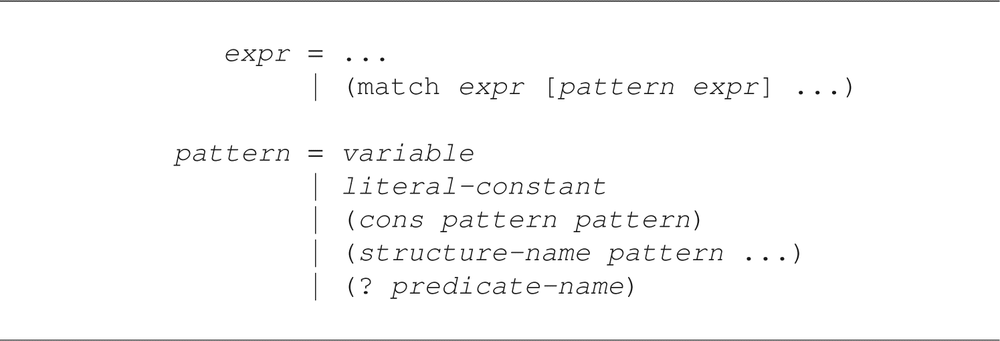
Figure 110: ISL+ match expressions
Roughly speaking,
(match expr
[pattern1 expr1]
[pattern2 expr2]
…)
proceeds like a cond expression in that it evaluates expr and sequentially tries to match its result with pattern1, pattern2, ⋯ until it succeeds with patterni. At that point, it determines the value of expri, which is also the result of the entire match expression.
The key difference is that match, unlike cond, introduces a new scope, which is best illustrated with a screen shot from DrRacket:
As the image shows, each pattern clause of this function binds variables. Furthermore, the scope of a variable is the body of the clause, so even if two patterns introduce the same variable binding—as is the case in the above code snippet—their bindings cannot interfere with each other.
Syntactically, a pattern resembles nested, structural data whose leafs are literal constants, variables, or predicate patterns of the shape
(? predicate-name)
In the latter, predicate-name must refer to a predicate function in scope, that is, a function that consumes one value and produces a Boolean.
Semantically, a pattern is matched to a value v. If the pattern is
• a literal-constant, it matches only that literal constant
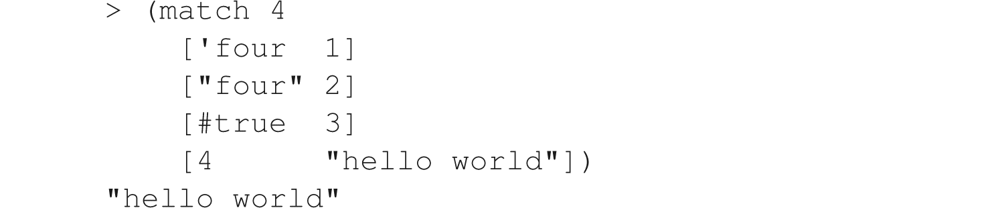
• a variable, it matches any value, and it is associated with this value during the evaluation of the body of the corresponding match clause
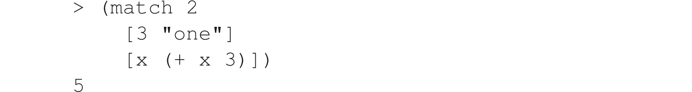
Since 2 does not equal the first pattern, which is the literal constant 3, match matches 2 with the second pattern, which is a plain variable and thus matches any value. Hence, match picks the second clause and evaluates its body, with x standing for 2.
• (cons pattern1 pattern2), it matches only an instance of cons, assuming its first field matches pattern1 and its rest matches pattern2
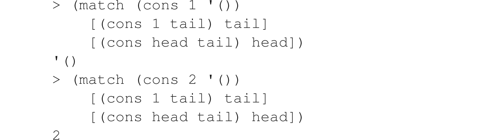
These interactions show how match first deconstructs cons and then uses literal constants and variables for the leafs of the given list.
• (structure-name pattern1 … patternn), it matches only a structure-name structure, assuming its field values match pattern1,⋯,patternn
> (define p (make-posn 3 4))
> (match p
[(posn x y) (sqrt (+ (sqr x) (sqr y)))])
5
Obviously, matching an instance of posn with a pattern is just like matching a cons pattern. Note, though, how the pattern uses posn for the pattern, not the name of the constructor.
Matching also works for our own structure type definitions:
> (define-struct phone [area switch four])
> (match (make-phone 713 664 9993)
[(phone x y z) (+ x y z)])
11370
Again, the pattern uses the name of the structure, phone.
Finally, matching also works across several layers of constructions:
> (match (cons (make-phone 713 664 9993) '())
[(cons (phone area-code 664 9993) tail)
area-code])
713
This match expression extracts the area code from a phone number in a list if the switch code is 664 and the last four digits are 9993.
• (? predicate-name), it matches when (predicate-name v) produces #true
> (match (cons 1 '())
[(cons (? symbol?) tail) tail]
[(cons head tail) head])
1
This expression produces 1, the result of the second clause, because 1 is not a symbol.
Stop! Experiment with match before you read on.
At this point, it is time to demonstrate the usefulness of match:
Sample Problem Design the function last-item, which retrieves the last item on a non-empty list. Recall that non-empty lists are defined as follows:
; A [Non-empty-list X] is one of:
; -- (cons X '())
; -- (cons X [Non-empty-list X])
Stop! Part II deals with this problem. Look up the solution.
With match, a designer can eliminate three selectors and two predicates from the solution using cond:
; [Non-empty-list X] -> X
; retrieves the last item of ne-l
(check-expect (last-item '(a b c)) 'c)
(check-error (last-item '()))
(define (last-item ne-l)
(match ne-l
[(cons lst '()) lst]
[(cons fst rst) (last-item rst)]))
Instead of predicates and selectors, this solution uses patterns that are just like those found in the data definition. For each self-reference and occurrence of the set parameter in the data definition, the patterns use program-level variables. The bodies of the match clauses no longer extract the relevant parts from the list with selectors but simply refer to these names. As before, the function recurs on the rest field of the given cons because the data definition refers to itself in this position. In the base case, the answer is lst, the variable that stands for the last item on the list.
Let’s take a look at a second problem from part II:
Sample Problem Design the function depth, which measures the number of layers surrounding a Russian doll. Here is the data definition again:
(define-struct layer [color doll])
; An RD.v2 (short for Russian doll) is one of:
; -- "doll"
; -- (make-layer String RD.v2)
Here is a definition of depth using match:
; RD.v2 -> N
; how many dolls are a part of an-rd
(check-expect (depth (make-layer "red" "doll")) 1)
(define (depth a-doll)
(match a-doll
["doll" 0]
[(layer c inside) (+ (depth inside) 1)]))
While the pattern in the first match clause looks for "doll", the second one matches any layer structure, associating c with the value in the color field and inside with the value in the doll field. In short, match again makes the function definition concise.
The final problem is an excerpt from the generalized UFO game:
Sample Problem Design the move-right function. It consumes a list of Posns, which represent the positions of objects on a canvas, plus a number. The function adds the latter to each x-coordinate, which represents a rightward movement of these objects.
Here is our solution, using the full power of ISL+:
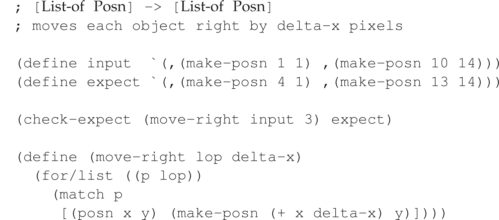
Stop! Did you notice that we use define to formulate the tests? If you give data examples good names with define and write down next to them what a function produces as the expected result, you can read the code later much more easily than if you had just written down the constants.
Stop! How does a solution with cond and selectors compare? Write it out and compare the two. Which one do you like better?
Exercise 308. Design the function replace, which substitutes the area code 713 with 281 in a list of phone records.
Exercise 309. Design the function words-on-line, which determines the number of Strings per item in a list of list of strings.